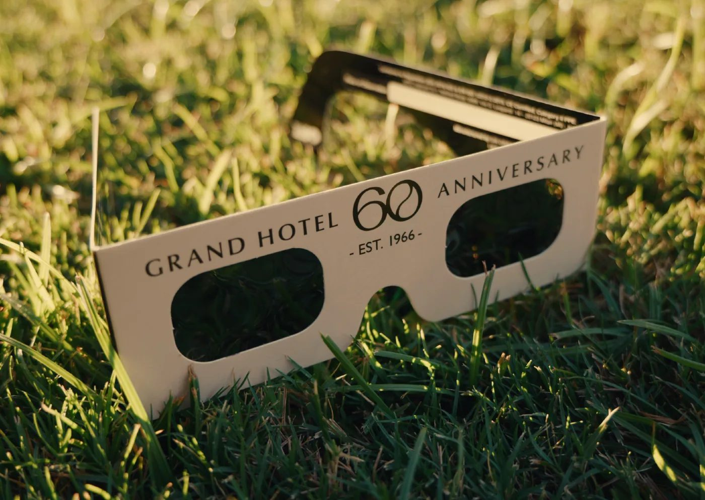

12 de agosto
O último eclipse da tua vida
Sob um sol escurecido.
Começou às 18h33, quase sem se notar, uma pequena dentada na orla do sol. Às 19h30, noventa e três por cento tinham desaparecido atrás da lua, e o Algarve mergulhou numa luz que nenhum de nós sabia bem nomear, nem crepúsculo, nem sombra, mais fresca e mais estranha do que ambos.
- Primeiro contacto
- 18h33
- No auge
- Noventa e três por cento, às 19h30